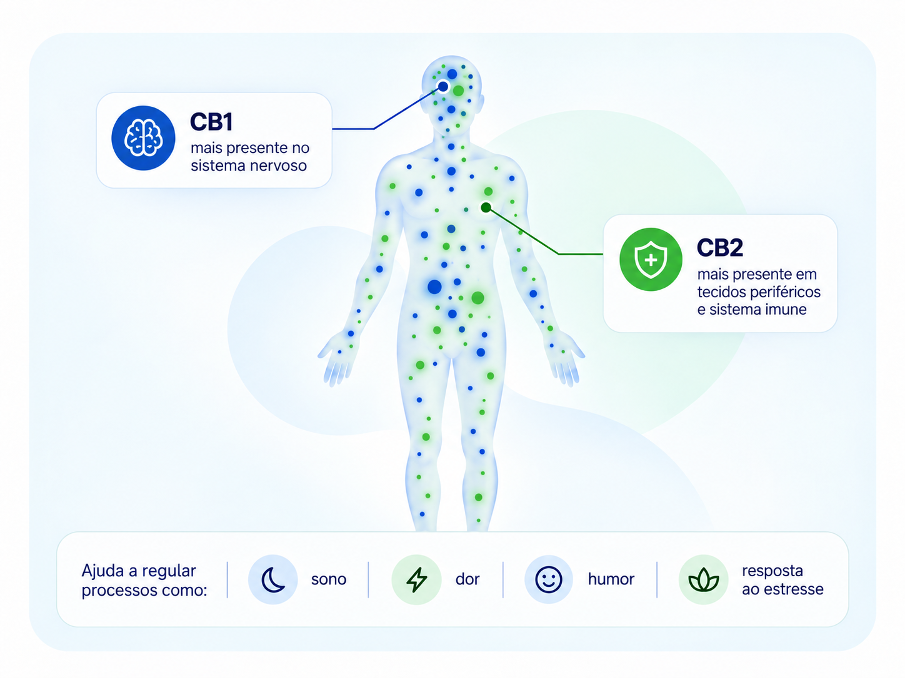

O cansaço que não passa com o sono
Você dorme, mas acorda cansado, e o dia já começa pesado antes do café.
Regulamentada no Brasil, prescrita por médico e ajustada para você, com acompanhamento depois da receita.
Se você convive com condições que já fazem parte da sua rotina, vale entender como esse tratamento funciona e conversar com um médico que avalie o seu caso.
Você dorme, mas acorda cansado, e o dia já começa pesado antes do café.
A dor no joelho, na coluna ou nas articulações faz parte do seu dia há tanto tempo que você já nem lembra como era acordar sem ela.
Ela continua ali, apertando o peito, mesmo depois de tudo o que você já tentou.
Você cuida de alguém com autismo ou com Alzheimer e está procurando outras possibilidades para essa rotina.
Talvez o que falte seja conhecer um caminho diferente. É isso que a gente te explica agora, de um jeito simples.
Nosso organismo possui um sistema chamado sistema endocanabinoide, envolvido na regulação de diferentes processos, como sono, dor, humor, apetite e resposta ao estresse. Os canabinoides da Cannabis, como CBD e THC, podem interagir de diferentes formas com essa rede de sinalização — e é essa relação que vem sendo estudada em diferentes contextos terapêuticos.
Isso mesmo: o seu corpo já produz os próprios canabinoides. Eles se conectam a receptores espalhados pelo organismo e ajudam a manter o equilíbrio de vários processos do dia a dia.

CB1 Mais presente no sistema nervoso.
CB2 Mais presente em tecidos periféricos e sistema imune.
No uso medicinal, existe uma intenção terapêutica planejada por um profissional habilitado. A formulação é conhecida, a concentração é definida e a dose é individualizada de acordo com a condição, a resposta do paciente e os objetivos do tratamento.
Dependendo da formulação, o produto pode conter CBD, THC e outros componentes da planta, em diferentes concentrações e proporções.
No Brasil, existem diferentes formas regulamentadas de acesso a produtos à base de cannabis mediante prescrição, incluindo produtos disponíveis em farmácias e vias específicas de importação.
Explore as dez condições que fazem parte da curadoria da Canabinote. A avaliação e a indicação de tratamento são individuais.
Toque em uma condição para saber mais.
São 4 passos para sair da dúvida e chegar a um cuidado médico guiado por ciência, com praticidade e segurança.
Veja a formação, a especialidade e as condições que cada profissional atende. Quem decide com quem conversar é você.
Escolha o melhor horário para a sua consulta. A confirmação chega no seu WhatsApp com data, horário e o link da consulta online, ou o endereço, se o atendimento for presencial.
Na consulta, o médico conhece a sua história e avalia se a cannabis medicinal faz sentido para o seu caso.
Se houver indicação, a receita é emitida pela própria plataforma, com formulação, dose e estratégia de tratamento definidas para você, a partir da avaliação clínica.
Ao iniciar o tratamento, você ativa o acompanhamento pelo WhatsApp. De tempos em tempos, responde perguntas rápidas sobre como está se sentindo, e o médico usa essas respostas para acompanhar a sua evolução e avaliar quando algum ajuste é necessário.
Com cannabis medicinal, a consulta é apenas o começo. A Canabinote ajuda a transformar esse cuidado em uma jornada mais organizada, com orientações claras, registro da evolução e acompanhamento ao longo do tempo.
A diferença não está apenas na prescrição,
mas na forma como o cuidado continua
ao longo da jornada.
A cannabis medicinal pode ser uma possibilidade para diferentes condições de saúde, mas sua indicação deve ser avaliada de forma individual, com orientação médica, informação de qualidade e acompanhamento ao longo da jornada.
Falar com a nossa equipe →